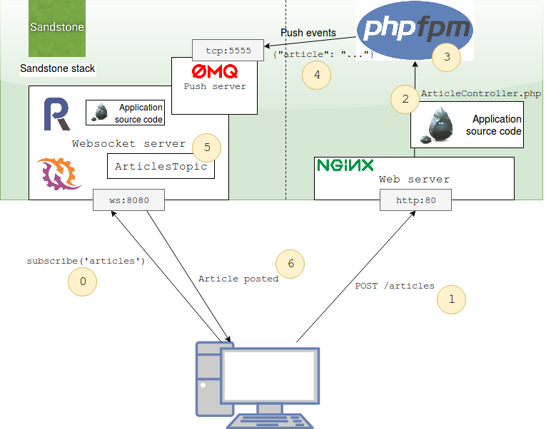

Sandstone runs a RestApi server and a Websocket server. Two stacks, running on differents processus.
This big picture show all Sandstone components, and list all steps in a standard use case, a RestApi request which triggers a Push event.

Javascript client opens a connection to websocket server.
It then subscribes to articles topic in order to receive
all new published articles as soon as someone posted one.
See
ChatTopicclass, or Javascript client implementation example in Full example.
A web client creates a new article. He then POST it to the RestApi server.
Nginx handle the HTTP request, and asks for php-fpm to execute PHP application. to return processed result.
PHP runs the application. In Sandstone, it means:
POST /articles route,ArticleController,ARTICLE_CREATED event through the Event Dispatcher.If the ARTICLE_CREATED event has been marked as forward with
$app->forwardEventToPushServer('ARTICLE_CREATED');,
Sandstone will automagically forward it to the websocket server process.
The magic trick here is to use a ZMQ socket. Sandstone serialize the event, send it through the ZMQ socket. The websocket process then deserialize it, and dispatch it in his Event dispatcher.
By this way, dispatching an event in the RestApi stack can be listened in the websocket stack.
Your ArticleTopic, which is listening to the ARTICLE_CREATED event,
calls the listener. This listener will JSON serialize the article, and broadcast the event
to the articles websocket topic.
See
ChatTopicclass to see how to listen to event: Full example.
The Javascript client, which earlier (step 0) subscribed to the articles websocket topic,
receives the JSON serialized event.
It can use this event to real-time display a notification that a new article has been posted, or dynamically add it to the DOM.